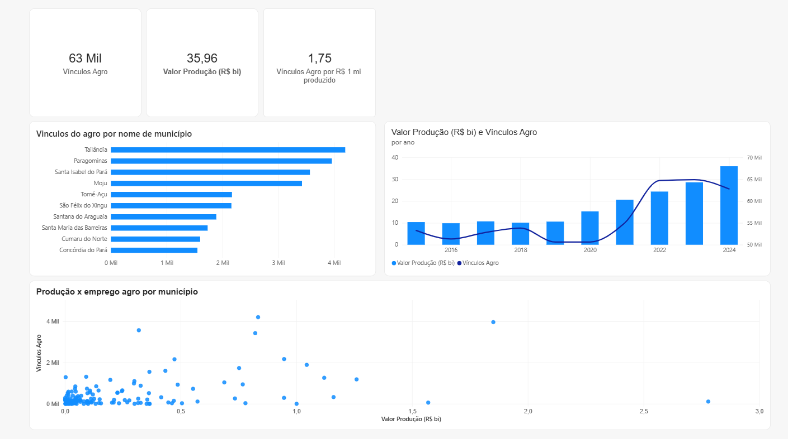

AluraBooks
Estante de livros de programação com categorias, favoritos e ordenação por preço.
 oi, sou a Alany!
oi, sou a Alany!
Analista de dados e desenvolvedora web.
Trato bases de dados com Python, Pandas e SQL e documento cada ajuste, para que qualquer número possa ser conferido.

vínculos formais no Pará, de 2015 a 2024. O agro tem 63 mil, mas a produção cresceu muito mais que o emprego.

da receita vêm de Campeões e Clientes Fiéis, e 30,3% dos clientes estão em risco.

em produção agrícola no Pará em 2025, a preços de 2025. Eram R$ 15,4 bi em 2016.

de faturamento no trimestre. O plano Prime saiu de R$ 28 mil para R$ 98 mil.

dos R$ 4,2 milhões recebidos vêm de só 3 clientes: um risco de concentração.
ficha de bolso
Dados
Dev
Desde 2023 sou desenvolvedora na Deflagra Tecnologia. Nos meus projetos, trato bases de dados com Python, Pandas e SQL e documento cada ajuste, para que qualquer número possa ser conferido.
Projetos de estudo em desenvolvimento web
Estante de livros de programação com categorias, favoritos e ordenação por preço.

Formulário que cria os cards dos colaboradores, organizados por time. Feito em React.

Sorteador de bingo com visual de cassino: a cartela de 1 a 90 marca cada pedra, com som, voz que anuncia o número e botão de desfazer.

Pads de percussão para tocar direto no navegador.

Tela de cadastro com dados pessoais e endereço.
Tecnologia, programação e desenvolvimento de sistemas.
Empresa de software de Belém (PA) que desenvolve aplicativos, sistemas em nuvem e automação de processos.
Design de experiência do usuário. Certificados em acessibilidade web, usabilidade mobile e JavaScript.
Bacharelado. Base do meu olhar para território, cidade e comportamento das pessoas.